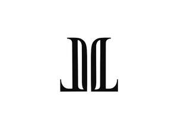
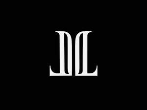

Trade Mark Journal No.2025/037 12 September 2025
UK00004258770 3 September 2025 (4,8,16,21,24,25,28)
Mark 1

Mark 2

- Class 4
- Tealight candles; Candles; Fragranced candles; Table candles.
- Class 8
- Spoons being tableware; Knives being tableware; Forks being tableware; Cutlery; Cutlery, kitchen knives, and cutting implements for kitchen use.
- Class 16
- Wall decorations of paper; Bows for decorating packaging; Adhesive wall decorations of paper; Table decorations of paper; Decorative paper centerpieces; Bows (Decorative -) for wrapping; Place mats of paper; Wrapping paper; Gift wrapping paper; Paper; Paper stationery; Place cards; Cards; Occasion cards; Table place setting mats paper; Note cards; Greeting cards; Invitation cards; Collectable cards; Blank cards; Menu cards; Social note cards; Tissue paper; Paper tissues; Napkin paper; Kraft paper; Paper stock [printing paper]; Adhesive paper; Envelope paper; Paper towels; Paper doilies; Ribbons (Paper -); Paper bows.
- Class 21
- Plates; China mugs; Bone china tableware [other than cutlery]; Glass plates; Plaques of china; Figurines of china; China ornaments; Statuettes of china; Busts of china; Glass tableware; Chinaware; Napkin rings; Candle snuffers; Candle sticks; Candle holders; Candle rings; Dinnerware; Tableware; Dishware; Oven-to-table tableware; Tableware of porcelain; Ceramic tableware; Coasters (tableware); Stemware; Glassware; Scoops [tableware]; Decorative chinaware; Crockery; Bakeware; Coffee services [tableware]; Tea services [tableware]; Jewelry dishes; Picnic crockery; Ovenware; Kitchen utensils; Spatulas [kitchen utensils]; Decorative plates; Graters [household utensils]; Meal trays; Cutlery trays; Cake trays; Trays [household]; Pet drinking bowls; Pet feeding bowls; Bowls; Salad bowls; Finger bowls; Serving bowls; Incense stick holders; Glass holders; Bouquet holders; Vases; Flower pots; Stone floor vases; Pottery.
- Class 24
- Interior decoration fabrics; Wall decorations of textile; Textiles for interior decorating; Fabrics for interior decorating; Table linen; Bed linen and table linen; Drink coasters of table linen; Fabric place mats; Dinner mats of textiles; Quilt bedding mats; Kitchen and table linens; Tablecloths of textiles; Household linens; Linens.
- Class 25
- Clothing; Fashion hats; Casual clothing; Furs [clothing]; Denims [clothing]; Headbands [clothing]; Jackets [clothing]; Clothing for sports; Sports clothing; Leather clothing; Cashmere clothing; Garments for protecting clothing; Capes (clothing); Athletic clothing; Silk clothing; Aprons [clothing]; Knitted clothing; Gloves as clothing; Belts for clothing; Embroidered clothing; Turtleneck shirts; Shirts; Dress shirts; Short-sleeved shirts; Polo shirts; Yoga shirts; Tennis shirts; Sport shirts; Baseball hats; Bobble hats; Hats; Cloche hats; Ski hats; Sports clothing [other than golf gloves].
- Class 28
- Decorations for Christmas trees; Cards [games]; Backgammon games; Chess games; Games consoles; Japanese playing cards (hanafuda); Boards games; Checkers [games]; Tarot cards [playing cards]; Bingo cards; Playing cards.
Lohralee Astor Interiors Limited